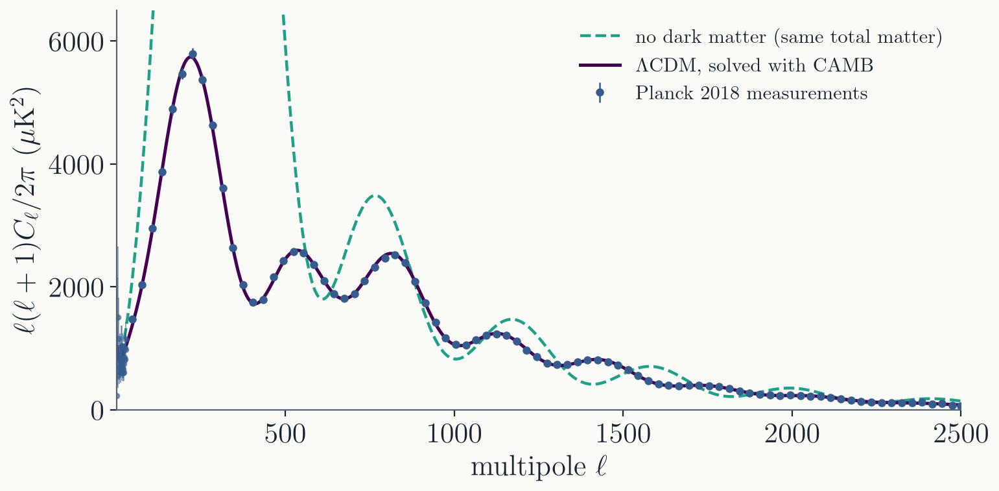

Today
- The Boris pusher. The standard integrator for charged particles, and why it conserves energy.
- Orbits. How NASA chose an integrator for spacecraft, and why it still uses it.
- Molecular dynamics. Velocity Verlet on a box of atoms, watched as it freezes.
- Cosmology. Why the microwave background is an ODE problem.
Part I · The Boris pusher
Charged particles
A charged particle in a magnetic field
$$\frac{d\mathbf{x}}{dt} = \mathbf{v}, \qquad \frac{d\mathbf{v}}{dt} = \frac{q}{m}\left(\mathbf{E} + \mathbf{v}\times\mathbf{B}\right)$$- With $\mathbf{E} = 0$ the magnetic force is always perpendicular to $\mathbf{v}$: it does no work, and $|\mathbf{v}|$ never changes.
- In a uniform $\mathbf{B}$ the particle circles at the cyclotron frequency $\omega_c = qB/m$.
- A good method should keep $|\mathbf{v}|$ exactly, over millions of gyrations.
Leapfrog for the Lorentz force
Stagger as in Lecture 10: positions at whole steps, velocities at half steps.
$$\begin{split} \mathbf{x}_{n+1} &= \mathbf{x}_n + \Delta t\, \mathbf{v}_{n+1/2} \\ \frac{\mathbf{v}_{n+1/2} - \mathbf{v}_{n-1/2}}{\Delta t} &= \frac{q}{m}\left(\mathbf{E}_n + \frac{\mathbf{v}_{n+1/2} + \mathbf{v}_{n-1/2}}{2}\times\mathbf{B}_n\right) \end{split}$$- The force depends on the velocity, which lives at half steps, so it is averaged over the step.
- The unknown $\mathbf{v}_{n+1/2}$ appears on both sides: the update looks implicit.
Boris's trick (1970)
Half an electric kick, a rotation about $\mathbf{B}$, and another half kick:
$$\begin{split} \mathbf{v}^- &= \mathbf{v}_{n-1/2} + \frac{q\mathbf{E}}{m}\frac{\Delta t}{2} &\qquad& \mathbf{t} = \frac{q\mathbf{B}}{m}\frac{\Delta t}{2}, \quad \mathbf{s} = \frac{2\mathbf{t}}{1 + t^2} \\ \mathbf{v}^+ &= \mathbf{v}^- + \left(\mathbf{v}^- + \mathbf{v}^-\times\mathbf{t}\right)\times\mathbf{s} &\qquad& \mathbf{v}_{n+1/2} = \mathbf{v}^+ + \frac{q\mathbf{E}}{m}\frac{\Delta t}{2} \end{split}$$- Two cross products solve the "implicit" equation exactly: no iteration, no matrix.
- The middle step is an exact rotation, so $|\mathbf{v}^+| = |\mathbf{v}^-|$: with $\mathbf{E} = 0$ the energy is conserved to rounding.
Boris against RK4, uniform field

- $\omega_c \Delta t = 0.3$, about 21 steps per gyration, 1000 gyrations.
- RK4 loses a factor $1 - (\omega_c\Delta t)^6/72$ of energy per step (Lecture 10): 19% by the end. Boris: $|\mathbf{v}|$ exact to $10^{-13}$.
A proton in the Van Allen belt

| 10 MeV proton, $4\,R_E$ from Earth's center | gyration | bounce | drift around the Earth |
| period | $0.14$ s | $2.3$ s | $1.2$ min |
Three timescales, one integrator
- The step is set by the fastest motion, the gyration. The physics of interest (the drift that forms the belt) is 500 times slower.
- Over the drift, Boris conserves the energy to $10^{-14}$. RK4, with the same step, loses 98% of it.
- This is why plasma codes push every particle with Boris.
Structure preservation matters most when the interesting timescale is far longer than the step.
Particle-in-cell simulations
Relativistic plasma turbulence (J. Nättilä): youtube.com/watch?v=Gj9mwAww3TM
Billions of particles pushed by Boris (ODEs), and the fields on a grid, evolved by Maxwell's equations (PDEs): coming later in the course.
Research from our group
Research from our group
Part II · How NASA integrates orbits
Choosing an integrator in 1963
NASA's comparison, 1963

NASA Space Flight Handbook, vol. 1 (1963), Chapter IV.C: the methods of the last five lectures, rated for computing trajectories.
Runge-Kutta: easy to start, slow. Multistep: fast.
"Unconditionally stable" here means no growing parasitic roots at small $h$, not the stiff stability of Lecture 10.
Their pick for orbits: Gauss-Jackson.
Gauss-Jackson
- A multistep predictor-corrector method (Lecture 10), built for second-order equations $\ddot{\mathbf{r}} = \mathbf{f}(t, \mathbf{r})$: it integrates twice without converting to a first-order system.
- Eighth order, fixed step, and about one or two evaluations of the force per step.
- Needs a start-up (a Runge-Kutta run for the first points), like every multistep method.
- Still used for satellite orbit propagation (Berry & Healy 2004).
100 orbits, measured

A circular orbit 7000 km from Earth's center (period 97 minutes), error after 100 orbits:
| RK4, 20k evaluations | 1900 km |
| DOP853, 40k | 1.2 m |
| DOP853, 97k | 0.7 mm |
| Gauss-Jackson 8, 20k | 0.5 mm |
High order, one or two evaluations per step, and a smooth periodic problem: the best case for a fixed-step multistep method.
Part III · Molecular dynamics
Newton's equations for many atoms
Molecular dynamics
$N$ atoms, Newton's second law, and a pair potential. For noble-gas atoms, Lennard-Jones:
$$m\,\ddot{\mathbf{r}}_i = -\sum_{j\ne i}\nabla_i V(r_{ij}), \qquad V(r) = 4\varepsilon\left[\left(\frac{\sigma}{r}\right)^{12} - \left(\frac{\sigma}{r}\right)^{6}\right]$$- Integrated with velocity Verlet (Lecture 10): one force evaluation per step, and bounded energy error over millions of steps.
- The cost is in the forces: all pairs is $O(N^2)$. Cutting the potential off at a few $\sigma$ and keeping neighbor lists makes it $O(N)$.
- Used for liquids, materials, proteins and drug binding.
Cooling into a crystal
- 256 atoms, cooled slowly by rescaling all velocities toward a falling target temperature.
- The jiggling dies down and the atoms line up into a triangular lattice: only Newton's equations and the Lennard-Jones force.
A nano-meteorite hits a crystal
- A shock wave runs through the lattice at the speed of sound, atoms splash out, and a crater with raised rims is left behind.
- No thermostat: 12,000 Verlet steps keep the total energy constant to $5 \times 10^{-7}$.
Part IV · Cosmology
The universe as an ODE problem
The microwave background

- Temperature fluctuations of about $10^{-5}$, left from when the universe became transparent, 380,000 years after the big bang. The multipole $\ell$ is an angle on the sky: about $180°/\ell$.
- The peaks are sound waves in the early plasma. Their positions and heights measure the contents of the universe.
Why it is an ODE problem
- On large scales the universe is homogeneous: the background (expansion, density, temperature) depends on time alone.
- The fluctuations are small, so their equations are linear. Fourier transform in space: each wavenumber $k$ evolves on its own.
- For each $k$, every unknown is a function of one variable:
The ODEs, for each $k$
Background first (the expansion $a(\tau)$, and the free-electron fraction as hydrogen forms). Then, for each $k$, ODEs for every component:
| component | unknowns | what drives them |
|---|---|---|
| photons | temperature fluctuation $\Theta = \delta T/T$ in each direction, as angular moments: $\Theta_0$ (temperature), $\Theta_1$ (flow), $\Theta_2, \dots$ | gravity, pressure, scattering off electrons |
| ordinary matter | density, velocity | gravity, pressure, drag from the photons |
| dark matter | density, velocity | gravity only |
| neutrinos | angular moments, like the photons | gravity only: they stream freely |
| spacetime | two potentials $\phi, \psi$ | Einstein's equations, sourced by all of the above |
Stiff early on: photons scatter off electrons far faster than the universe expands.
From the ODEs to $C_\ell$
- Expand the temperature map of the sky in spherical harmonics: $$\frac{\delta T}{T}(\hat n) = \sum_{\ell m} a_{\ell m}\, Y_{\ell m}(\hat n), \qquad C_\ell = \langle |a_{\ell m}|^2 \rangle$$ $C_\ell$ measures how much the temperature varies on angular scales of about $180°/\ell$.
- For one wave $k$, the photon moments at our position today, $\Theta_\ell(k, \tau_0)$, are that wave's pattern on our sky.
- The sky is all the waves together, with random amplitudes from the early universe (spectrum $P(k)$): $$C_\ell = \frac{2}{\pi}\int dk\, k^2\, P(k)\, \big|\Theta_\ell(k, \tau_0)\big|^2$$
The solution meets the sky

- Six parameters, and the ODE solution runs through every Planck point: $\chi^2 = 80$ for 83 binned measurements.
- This agreement is among the strongest evidence for $\Lambda$CDM: remove dark matter, keeping the same total matter, and the peaks come out wrong.
Every pixel is an ODE
NASA Goddard, "The Doubly Warped World of Binary Black Holes": youtube.com/watch?v=rQcKIN9vj3U
References
- Further reading:
- Qin et al., "Why is Boris algorithm so good?", Phys. Plasmas 20, 084503 (2013).
- Berry & Healy, "Implementation of Gauss-Jackson integration for orbit propagation", J. Astronaut. Sci. 52, 331 (2004).
- Frenkel & Smit, Understanding Molecular Simulation.
- Ma & Bertschinger, ApJ 455, 7 (1995); Dodelson & Schmidt, Modern Cosmology.